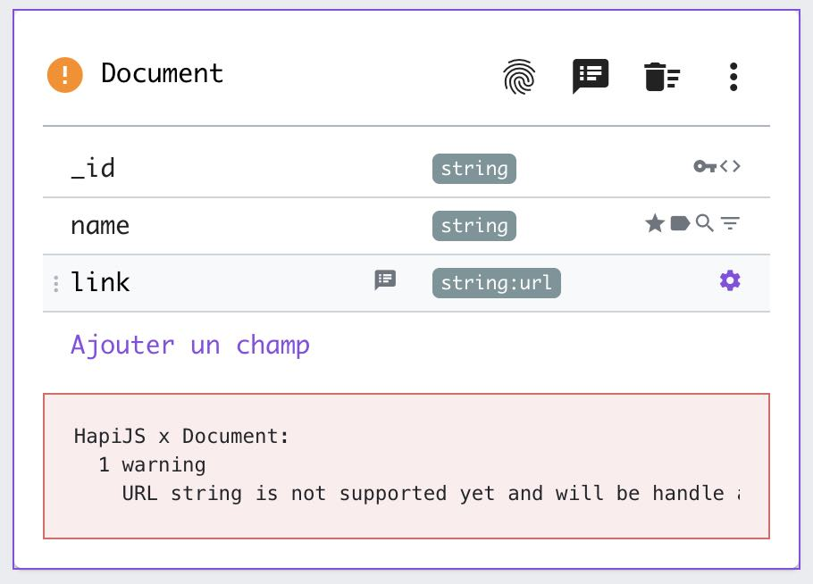
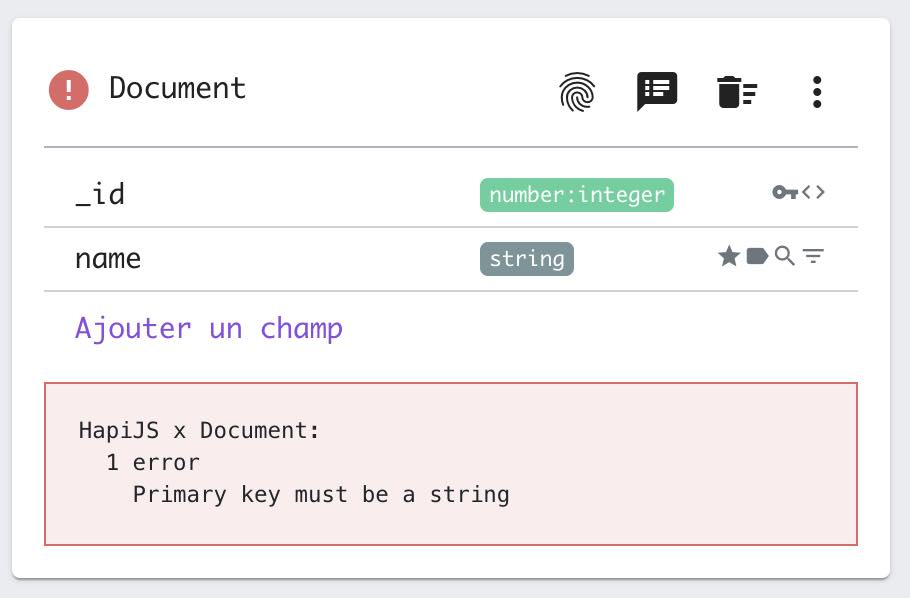

Étape 5: Validateur de modèles de données
Vos templates ne peuvent pas gérer n'importe quelle combinaison de champs et d'attributs. Pour éviter cela, vous pouvez associer un validateur de modèle de données à vos templates.
Comment ça fonctionne ?
Ce validateur est écrit en JavaScript pur. Il reçoit un modèle de données unique et renvoie des warnings et des errors.
Ces avertissements et erreurs seront affichés lors de la gestion des modèles de données :
| Avertissement | Erreur |
|---|---|
|  |  |
Écrire un validateur
Lors de la validation du modèle de données, le code JavaScript est enveloppé dans une fonction. Par conséquent, le code que vous écrivez est le corps de cette fonction. Votre code doit retourner un objet comme celui-ci :
return {
errors: ['Model has no primary key'],
warnings: []
}
Accéder aux propriétés du modèle de données
Dans le script du validateur, le modèle de données est disponible sous la variable model.
La variable model est structurée comme ceci :
{
"id": "bdc6c58e-ec49-9193-6b29-6c75518bc3ad",
"name": "Bookmark",
"notes": "A user can only list its own bookmarks",
"fields": [
{
"name": "_id",
"notes": null,
"type": "string",
"subtype": null,
"value": null,
"primary": true,
"unique": false,
"label": false,
"nullable": false,
"multiple": false,
"embedded": false,
"searchable": false,
"sortable": false,
"hidden": false,
"internal": true,
"restricted": false,
"ownership": false
}
],
"accesses": {
"create": "auth",
"read": "owner",
"update": "admin",
"remove": "owner",
"search": "owner",
"count": "owner"
}
}
Contrairement au moteur de template JavaScript, les propriétés du modèle de données ne sont pas pré-calculées et vous n'avez pas accès aux dépendances du modèle de données.
Exemple de validateur
Voici un exemple de validateur qui envoie un avertissement pour un type de champ non pris en charge, et une erreur si la clé primaire n'est pas conforme.
// Model object is injected as "model"
const errors = [];
const warnings = [];
// -----------------------------
// File fields
if (model.fields.filter((f) => f.type === 'file').length) {
errors.push('File fields are not supported yet by this boilerplate');
}
// URL fields
if (model.fields.filter((f) => f.type === 'string' && f.subtype === 'url').length) {
warnings.push('URL string is not supported yet and will be handle as default string');
}
// -----------------------------
// Primary key
const primaries = model.fields.filter((f) => f.primary);
if (primaries.length > 1) {
errors.push('Only one field can be primary');
}
const primary = primaries[0];
if (primary) {
if (primary.name !== '_id') {
errors.push('Primary key must be called "_id"');
}
if (primary.type !== 'string') {
errors.push('Primary key must be a string');
}
if (!primary.internal) {
errors.push('Primary key must be a internal');
}
} else {
errors.push('Primary key is required');
}
return {
errors,
warnings,
};